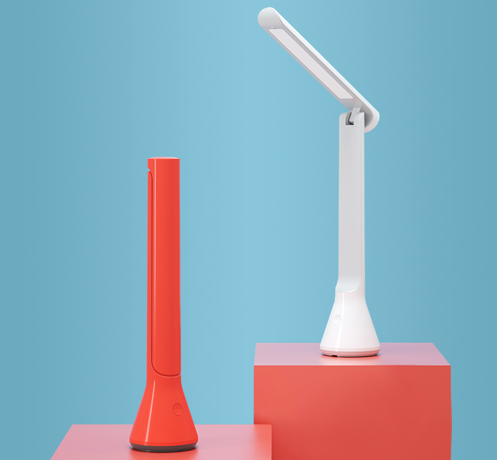
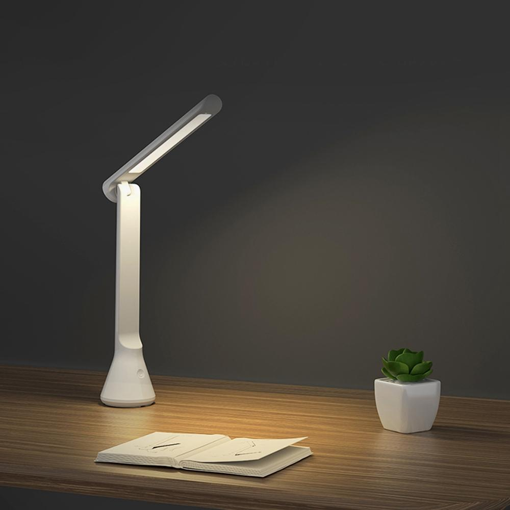
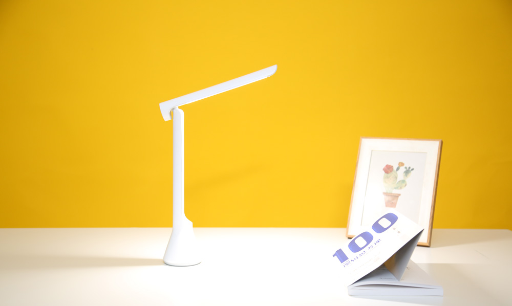
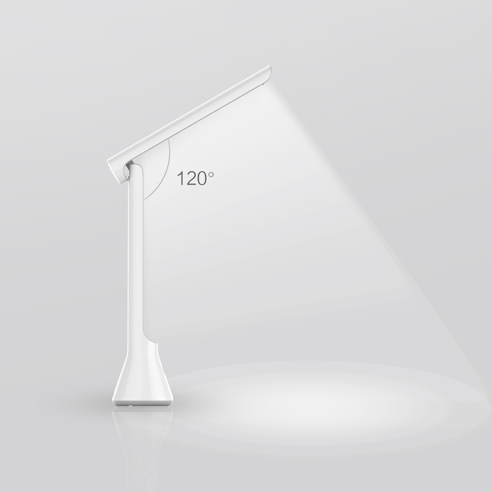
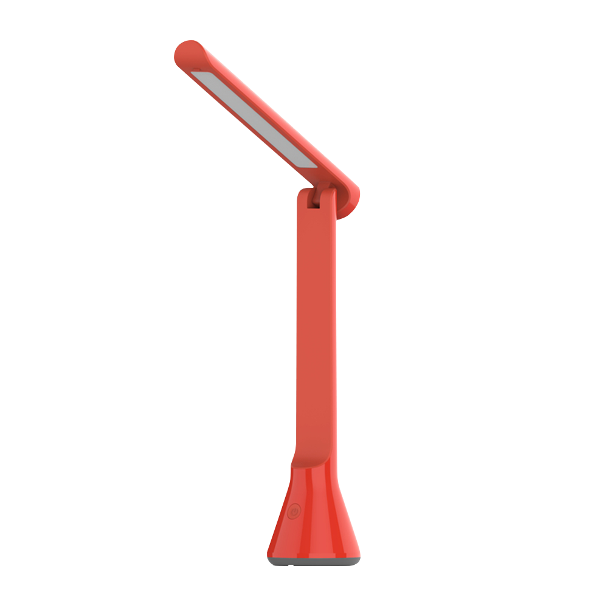

<div class="row folding">
    <div class="col-xs-12 col-sm-12 col-md-10 col-md-offset-1 col-lg-8 col-lg-offset-2 content">

        <section class="row folding_content_1">
            <div class="col-xs-12 col-sm-6 col-md-6 col-lg-6">
                <div class="text">
                    <h1>Yeelight Rechargeable Folding Desk Lamp</h1>
                    <h2>Беспроводная складывающаяся настольная лампа</h2>
                    <p>Легкая и портативная | Встроенный аккумулятор | Регулировка угла наклона</p>
                </div>
            </div>
            <div class="col-xs-12 col-sm-6 col-md-6 col-lg-6">
                
            </div>
        </section>

        <section class="row folding_content_2">
            <div class="col-xs-12 col-sm-12 col-md-6 col-md-push-6 col-lg-6 col-lg-push-6" style="padding: 0">
                <div class="text">
                    <h2>Лампа трансформер</h2>
                    <p>Беспроводная настольная лампа Yeelight Rechargeable Folding Desk Lamp одним движением руки
                        раскрывает перед вами все свои секреты, превращаясь в многофункциональный осветительный прибор.
                    </p>
                    <p>Устойчива на ровной твёрдой поверхности, не ограничена в перемещении проводами.</p>
                </div>
            </div>
            <div class="col-xs-12 col-sm-12 col-md-6 col-md-pull-6 col-lg-6 col-lg-pull-6"
                style="padding: 0; font-size: 0;">
                </div>
        </section>


        <section class="row folding_content_3">
            <div class="col-xs-12 col-sm-12 col-md-12 col-lg-12 align-center" style="padding: 0;">
                <div class="text">
                    <h2>Минимализм в стиле Yeelight</h2>
                    <p>Дизайнерам удалось передать удивительную четкость форм, изгибы и утонченность. Это замечательный
                        подарок, который займёт достойное место в любом интерьере и покажет вашу заботу о дорогих людях.
                        Два универсальных цвета: белый и красный.</p>
                </div>
                
            </div>
        </section>

        <section class="row folding_content_2">
            <div class="col-xs-12 col-sm-12 col-md-6 col-md-push-6 col-lg-6 col-lg-push-6" style="padding: 0">
                <div class="text">
                    <h2>Комфортный свет</h2>
                    <p>Для удобства использования предусмотрена регулировка верхней части лампы на 120°.</p>
                    <p>Выбирайте подходящий режим из трех возможных для работы за компьютером, рукоделия или чтения
                        книги. Каждый отличается сбалансированной цветовой температурой и яркостью.</p>
                </div>
            </div>
            <div class="col-xs-12 col-sm-12 col-md-6 col-md-pull-6 col-lg-6 col-lg-pull-6"
                style="padding: 0; font-size: 0;">
                </div>
        </section>

        <section class="row folding_content_4">
            <div class="col-xs-12 col-sm-12 col-md-12 col-lg-12 align-center" style="padding: 0;">
                <div class="text">
                    <h2>Встроенный аккумулятор</h2>
                    <p>Лампа рассчитана на 4-8 часов непрерывной работы в зависимости от режима. До 40 часов
                        функционирования в режиме ожидания. Когда ресурсы встроенного аккумулятора ёмкостью 1800 мАч
                        исчерпаны, устройство легко зарядить от универсального порта USB.</p>
                </div>
                
            </div>
        </section>

        <section class="row folding_content_11">
            <div class="col-sm-12 col-md-12 col-lg-12" style="padding: 0">
                
                <table class="table">
                    <thead>
                        <tr>
                            <th colspan="2">Характеристики</th>
                        </tr>
                    </thead>
                    <tbody>
                        <tr>
                            <td>Модель</td>
                            <td>YLTD11YL</td>
                        </tr>
                        <tr>
                            <td>Цвет</td>
                            <td>белый, красный</td>
                        </tr>
                        <tr>
                            <td>Размеры</td>
                            <td>70 × 293 × 34 мм</td>
                        </tr>
                        <tr>
                            <td>Вес</td>
                            <td>380 г</td>
                        </tr>
                        <tr>
                            <td>Время работы</td>
                            <td>4/8/40 часов (в зависимости от выбранной яркости)</td>
                        </tr>
                        <tr>
                            <td>Цветовая температура</td>
                            <td>3700 К</td>
                        </tr>
                        <tr>
                            <td>Световой поток</td>
                            <td>200 лм</td>
                        </tr>
                        <tr>
                            <td>Аккумулятор</td>
                            <td>1800 мАч</td>
                        </tr>
                        <tr>
                            <td>Материал</td>
                            <td>Пластик</td>
                        </tr>
                    </tbody>
                </table>
            </div>
        </section>
    </div>
</div>